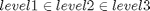

GetImpLevInfo
Description: this function is passed a group of values and this function works out the indexs of the values which are within the 3 specific defined levels all indexes that are not returned are not within these three importance values. Note that level 1 points are inside level 2 and 3 and level 2 inside 3!!

Contents
Function Call
Inputs:
vals (3*many double) point which we want to know which level they are inside
Returns:
level1 (1*many double) index of points in level1
level2 (1*many double) index of points in level2
level3 (1*many double) index of points in level3
function [level1,level2,level3]=GetImpLevInfo(vals)
Variables
global workspace robot_maxreach; if nargin<1 || isempty(vals) error('You must pass in the values to check weight'); end level1=[];level2=[];
Find index for level 3
level3=find(... vals(:,1)>=workspace.impLev(3).x(1)&vals(:,1)<=workspace.impLev(3).x(2)&... vals(:,2)>=workspace.impLev(3).y(1)&vals(:,2)<=workspace.impLev(3).y(2)&... vals(:,3)>=workspace.impLev(3).z(1)&vals(:,3)<=workspace.impLev(3).z(2));
If points level 3, find which ones are inside level2
if size(level3,2)>0 level2=level3(find(... vals(level3,1)>=workspace.impLev(2).x(1)&vals(level3,1)<=workspace.impLev(2).x(2)&... vals(level3,2)>=workspace.impLev(2).y(1)&vals(level3,2)<=workspace.impLev(2).y(2)&... vals(level3,3)>=workspace.impLev(2).z(1)&vals(level3,3)<=workspace.impLev(2).z(2)));
If points level 2, find which ones are inside level1
if size(level2,2)>0 level1=level2(find(... vals(level2,1)>=workspace.impLev(1).x(1)&vals(level2,1)<=workspace.impLev(1).x(2)&... vals(level2,2)>=workspace.impLev(1).y(1)&vals(level2,2)<=workspace.impLev(1).y(2)&... vals(level2,3)>=workspace.impLev(1).z(1)&vals(level2,3)<=workspace.impLev(1).z(2)&... sqrt((vals(level2,1)-robot_maxreach.firstlinkpos(1)).^2+... (vals(level2,2)-robot_maxreach.firstlinkpos(2)).^2+... (vals(level2,3)-robot_maxreach.firstlinkpos(3)).^2)<robot_maxreach.val &... (vals(level2,1)<workspace.robotsize(1,1) | vals(level2,1)>workspace.robotsize(1,2)) |... (vals(level2,2)<workspace.robotsize(2,1) | vals(level2,2)>workspace.robotsize(2,2)) |... (vals(level2,3)<workspace.robotsize(3,1) | vals(level2,3)>workspace.robotsize(3,2)))); end end